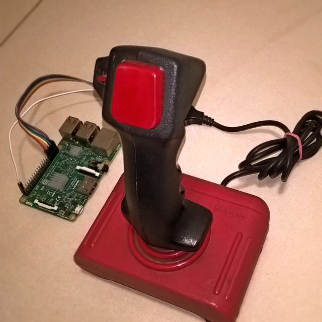
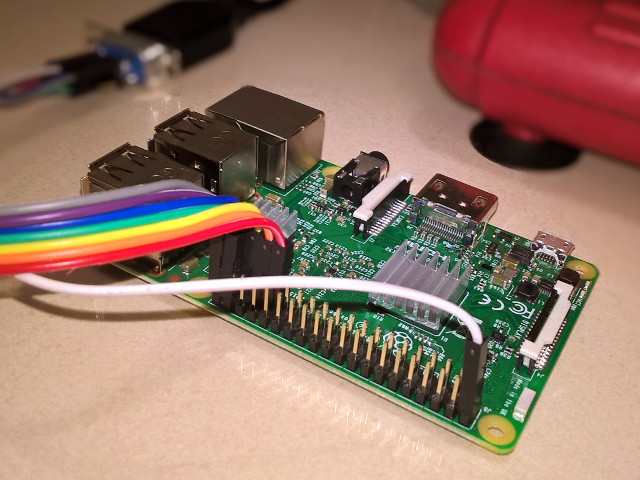
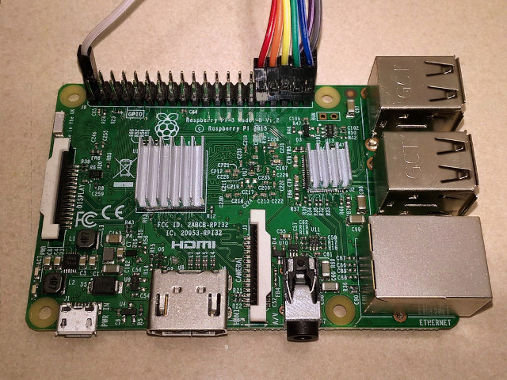
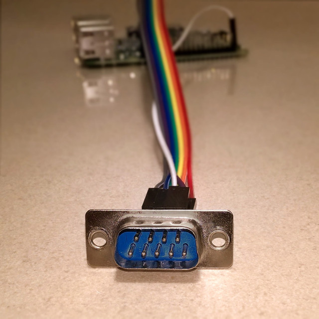

amiga-joystick-rpi
Connect your old Amiga joystick to a Raspberry

How it works
The amiga-joystick.py script reads data from RPi GPIO pins and translates
them to Linux input events. You don't need any special drivers or additional
software to run it -- the only requirement is the python-uinput module.
Connecting the joystick
To use the script you'll need to connect the Amiga joystick to the Raspberry GPIOs. The Amiga joystick port is simply a female DE-9 (aka Serial Port) connector. There are 6 data lines (4 directions and 2 buttons) -- these need to be connected to the GPIOs. Besides that there is a ground pin and a power supply (+5V) pin. The power pin is optional, most joysticks only need it for autofire.
Suggested connection of DE-9 pins to GPIOs (BCM numbering):
- pin 1 -- forward -- GPIO 6
- pin 2 -- back -- GPIO 13
- pin 3 -- left -- GPIO 19
- pin 4 -- right -- GPIO 26
- pin 5 -- not used
- pin 6 -- button 1 (fire) -- GPIO 20
- pin 7 -- power supply +5V
- pin 8 -- ground
- pin 9 -- button 2 -- GPIO 21
If you'd like to use different GPIO pins, change the CHANNELS mapping in the
amiga-joystick.py script.
Event mapping
By default, the Amiga Joystick is detected as a keyboard. Joystick movement is translated to arrow keys, button A (fire) is translated to left CTRL, button B (often unused) is translated to left shift. This mapping allows playing Amiga games on RetroPie with the uae4all2 emulator.
Again, if you'd like to map the joystick directions or buttons to different
keys, change the CHANNELS mapping in the amiga-joystick.py script.
Running the script
After you've connected everything, you can simply start the script from the command line as root:
sudo ./amiga-joystick.py
You can also make the script run automatically on startup by adding the
following line to /etc/rc.local:
/some/path/amiga-joystick.py &
More Pictures
  